分析类图（全貌） · 实体类跨两列，栏头居中于两列之间

共 17 张图：UML 用例图 1 张、用例交互模型（顺序图）14 张、分析类图 2 张。
图为矢量 SVG，白底，可直接拖入 Word / WPS 或经 markdown-pdf 扩展导出 PDF。
含 14 个用例、5 组执行者关联，以及 4 条用例间关系（2 条 «include»、2 条 «extend»）。 UC-03 与外部汇编工具链之间的联系按执行者关联绘制，对应需求文档 4.4 节第 5 条关系。
用例图 · 图例、泛化说明见图内
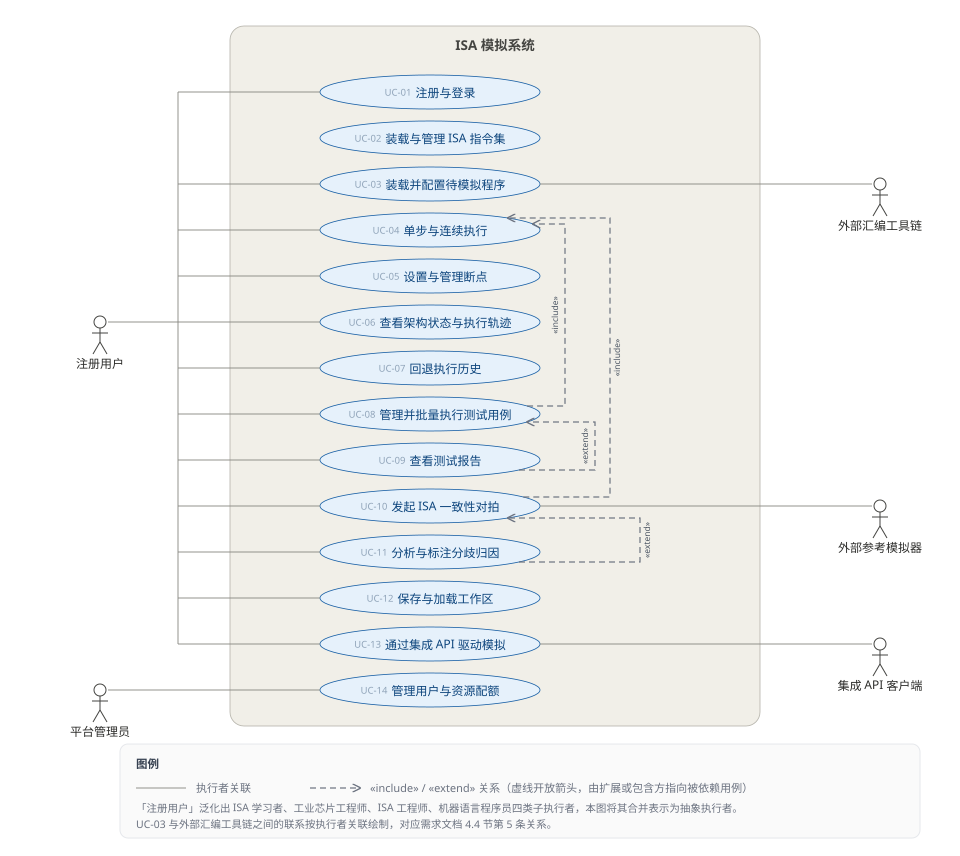
图例：灰色 = 执行者，蓝色 = 边界类，琥珀色 = 控制类，灰白 = 实体类；实线三角箭头 = 调用，虚线开放箭头 = 返回，折线 = 自调用。
UC-01 注册与登录
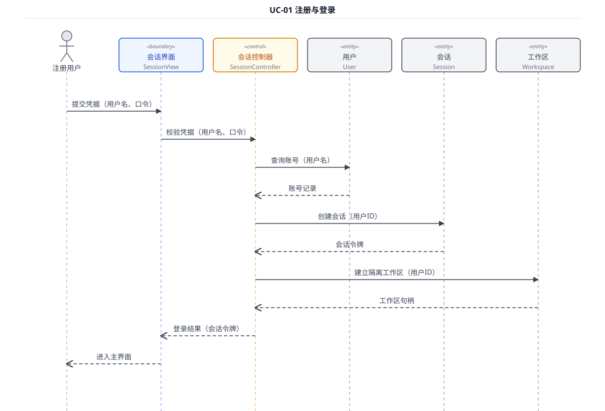
UC-02 装载与管理 ISA 指令集
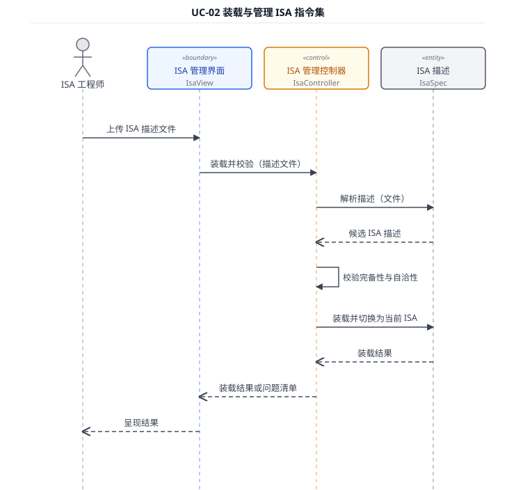
UC-03 装载并配置待模拟程序 · 含外部工具链分支
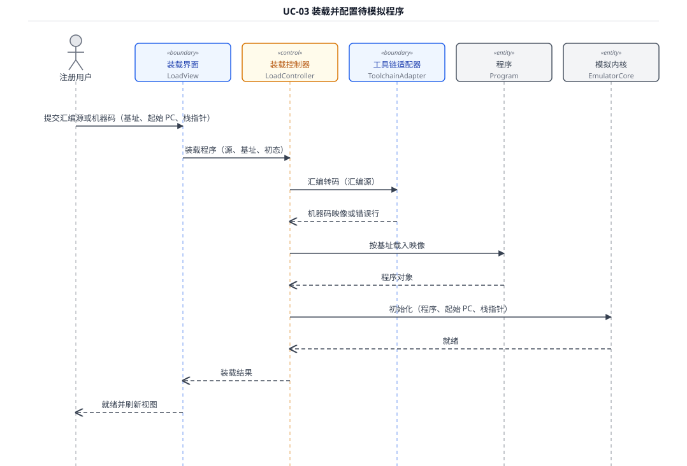
UC-04 单步与连续执行 · 内循环，被 UC-08 / UC-10 / UC-13 复用
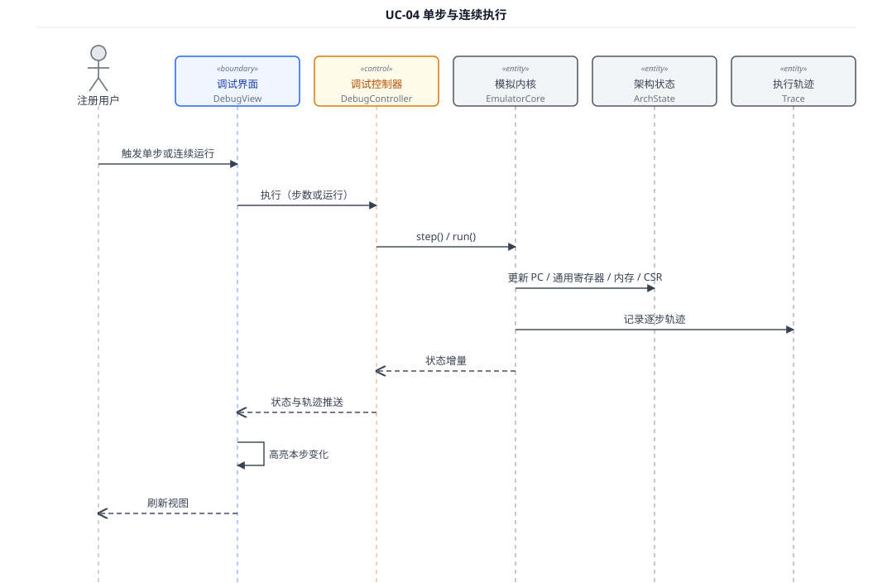
UC-05 设置与管理断点
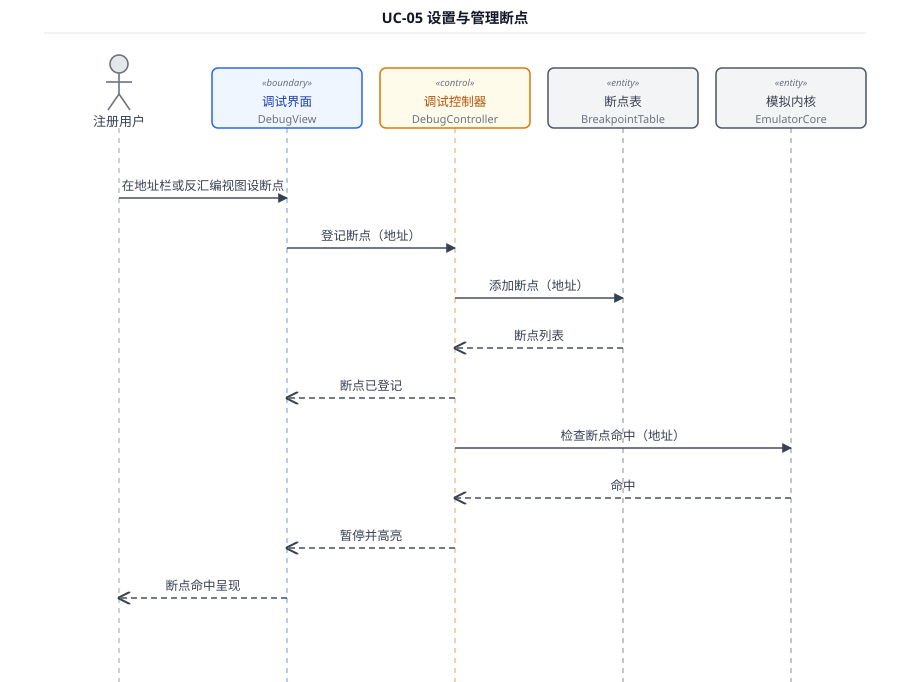
UC-06 查看架构状态与执行轨迹
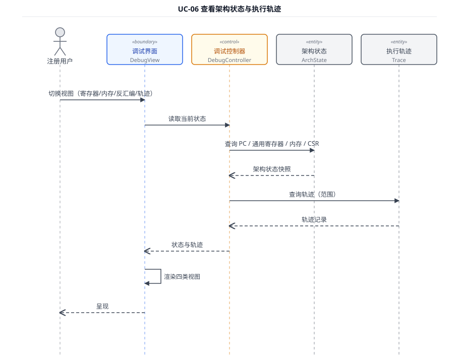
UC-07 回退执行历史
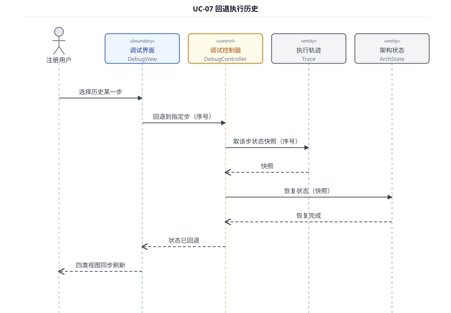
UC-08 管理并批量执行测试用例 · 最长链路，执行者直连集成 API 接口
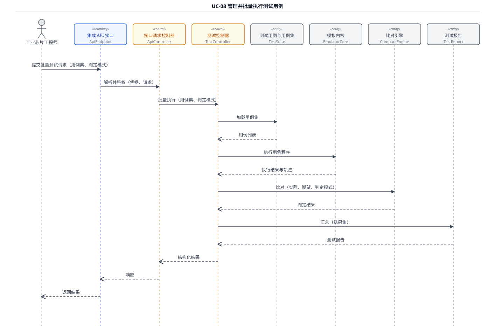
UC-09 查看测试报告
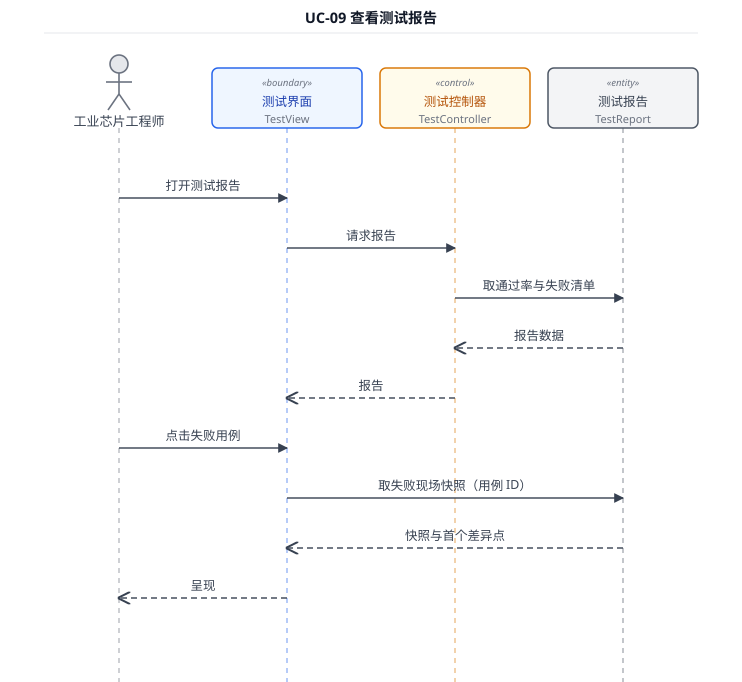
UC-10 发起 ISA 一致性对拍 · 唯一跨外部系统（参考模拟器适配器）
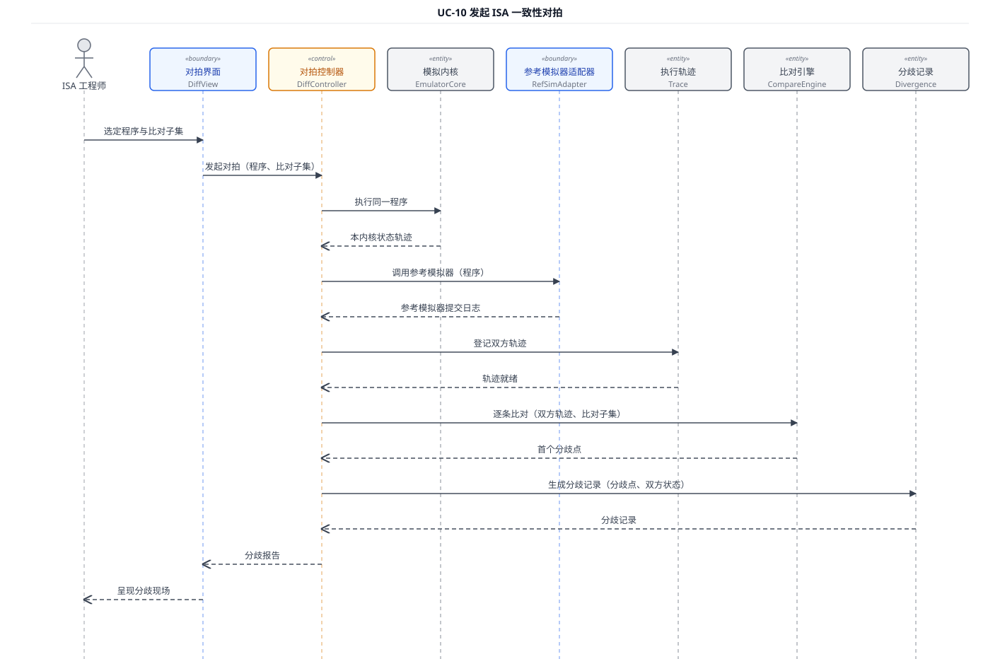
UC-11 分析与标注分歧归因
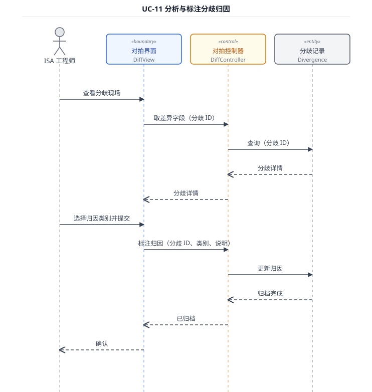
UC-12 保存与加载工作区 · 保存与加载两段合成一张图
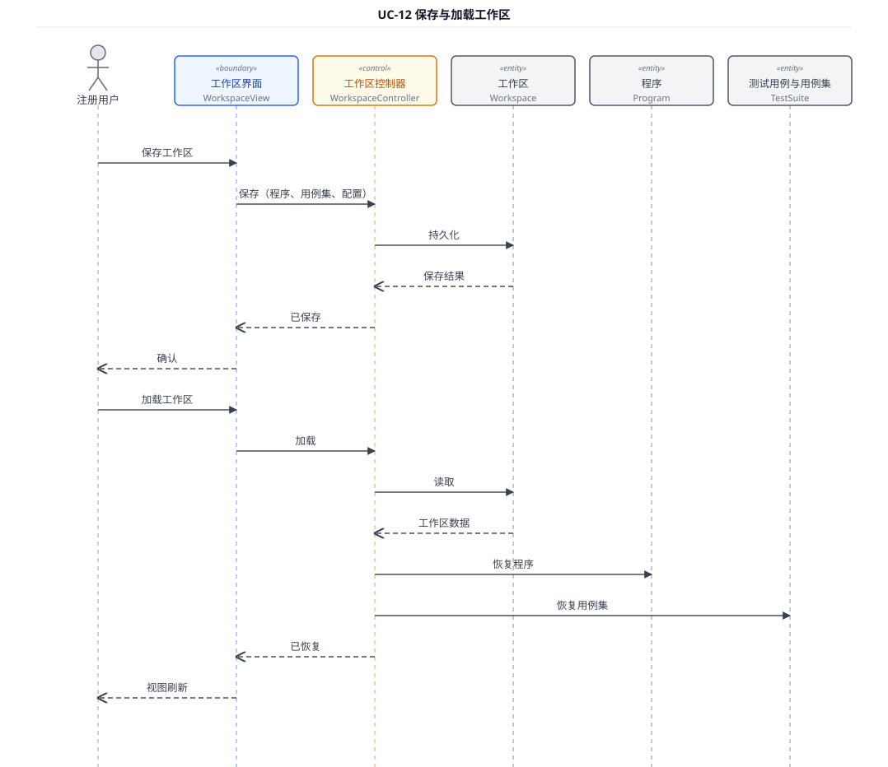
UC-13 通过集成 API 驱动模拟
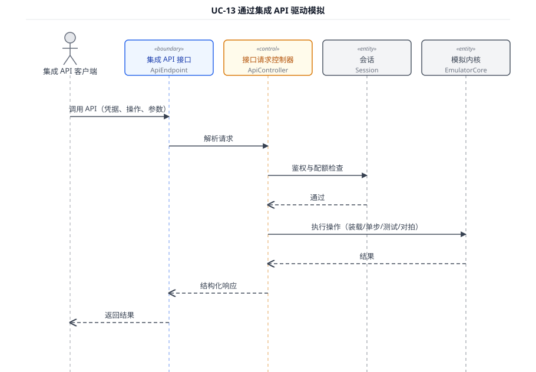
UC-14 管理用户与资源配额
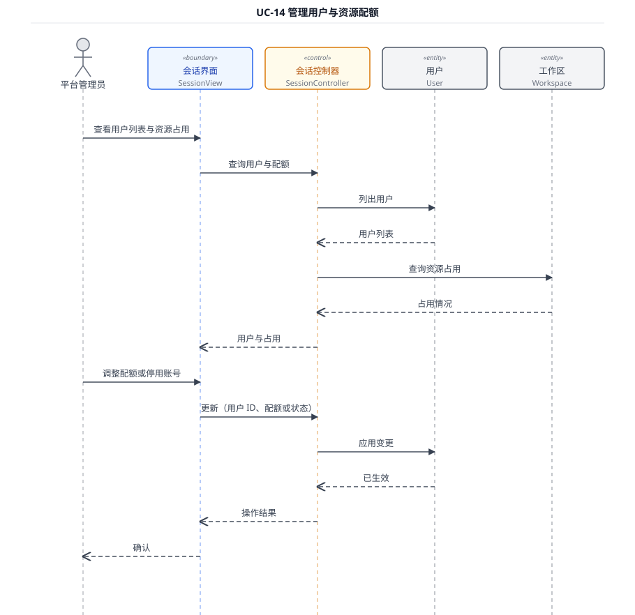
共 30 个分析类：边界类 10、控制类 8、实体类 12。分析类层面不存在继承关系。
分析类图（全貌） · 实体类跨两列，栏头居中于两列之间
分析类图 · 实体类详图 · 12 个实体类，含关键属性与主要职责

| 文件 | 内容 | 被引用位置 |
|---|---|---|
| ../用例图.svg | UML 用例图 | 说明书 3.3.1 |
| UC-01.svg ~ UC-14.svg | 14 张用例顺序图 | 说明书 3.3.2 |
| 分析类图.svg | 分析类图全貌 | 说明书 3.3.3 |
| 分析类图-实体类.svg | 实体类详图 | 说明书 3.3.3 |
| 交互模型说明.md | 各用例参与对象表与消息序列表 | 说明书 3.3.2 素材 |
| 分析类模型说明.md | 30 个分析类职责 / 属性 / 关系 | 说明书 3.3.3 素材 |